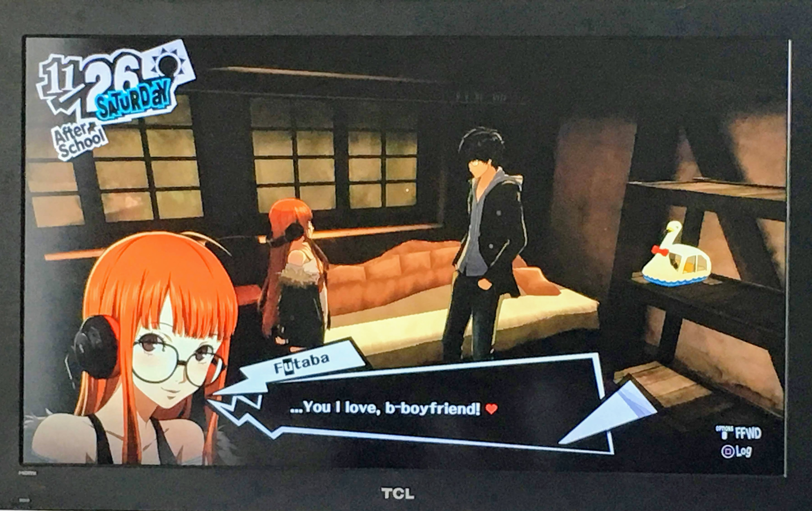

While I’m stuck at home for social distancing, I thought I might take time to casually review some of my games for my own recordkeeping. I’ve been trying to play Nier: Automata (which I’m kind of failing at) and it’s been making me think about other Japanese single player games I’ve played.
To limit the number of games I review in this post, I’ve artificially limited them to:
- Japanese
- Single-player
- Story based (so no Animal Crossing)
- I played >= 10 hours of and completed at least one round of (so no Bravely Default or Yakuza series, or short free games)
I’m hoping to capture my thoughts so that I don’t have to later. This is not really a well-defined “review” in that I don’t have a rubric or format or anything. I’m just jotting my thoughts down, a lot on music because that seems to be easy to comment on for me. I will be covering Fire Emblem: Awakening, Fire Emblem: Fates, Final Fantasy XV, Bayonetta 2, and Persona 5, in the order I played.
Table of Contents
Please don’t read this if you don’t want spoilers because they are all over the place.
Fire Emblem: Awakening, Fates
For the Fire Emblem series, I’ve played Awakening and Fates (both Birthright & Conquest) on the Nintendo 3DS. It seems I played Awakening in 2014 and Fates in 2016. I can’t believe it’s been that long.
Fire Emblem Awakening was the first Fire Emblem game I played, and I was instantly captivated. I think Fire Emblem has a great flow of story, grind, and relationships in a straightforward experience. As a beginner, I could easily comprehend the battle system. The character classes and the level curve were fun to experiment with. There’s a lot of replay value for that reason – for Awakening, I had at least 3 playthroughs at different difficulties, and 2 for Birthright and 1 for Conquest (2nd in progress.) The battle animation is always surprising charming, especially pairing folks that you want to marry, and seeing them fight together, with ridiculous weapons like daikon and parasols.
As for the story… well, I don’t think the story is especially that good for either Awakening or Fates. I did not cry in any of the stories. I will not comment on that further, and instead, focus on the important part, which is pairing:
Awakening (Found on my email – I don’t remember otherwise. I had my avatar go with Frederic the first time I played. He was so strong… but only at the beginning…)
- Me (Jin) and Cordelia
- Olivia and Chrom
- Virion and Sully
- Sumia and Frederic
- Vaike and Miriel
My favorite character in Awakening was Tharja. I love dark mages.
Birthright
For my first round, I matched my character (Lua) with Izana, which I regretted because Izana is kind of creepy. I shuddered every time in the lovey-dovey scenes (the whole where they zoom to the face.)
When I played a boy:
- Me (Nil) and Scarlet
- Mozu and Ryoma - Yes! A peasant and a crown prince!
- Sakura and Subaki - Princess and her underling!
- Midori and Kana (BFFs)
- Asugi and Rhajat
- Shiro and Kiragi
- Kaden and Hana - Random, but cute couple.
- Kagero and Saizo - Ninja couple.
- Azura and Silas - Gray-blue hair couple.
- Hinoka and Azama - Also princess and underling.
- Takumi and Oboro - Also Prince and underling.
- Kaze and Setsuna
- Hinata and Rinkah
- Hayato and Orochi - Mage couple.
- Jacob and Felicia - Butler Maid couple.
- Shiro & Kiragi - Cousins??
Conquest
- Me (Caster) and Kaze - very good! Very touching.
- Arthur and Elise
- Dwyer and Ophelia - I love both of them, and they can be pretty useful. Dwyer is great at heals.
- Charlotte and Leo - Yay, gold digger gets prince.
- Forrest and Velouria
- Nina and Soleil - BFFs, both bow knights.
- Sophie and Siegbart - they were cute in dialogue.
- Keaton and Felicia
- Mozu and Jakob
- Effie and Silas - good knight couple.
- Odin and Camilla - Could you tell I have a soft spot for mages and I’ll always pair them together?
- Xander and Peri - I like Peri too, and I liked her with Xandar.
- Beruka and Benny
- Laslow and Nyx - Nyx is also my favorite, and I turned her into a Dark Knight.
- Selena and Niles
Overall, I feel like Fire Emblem to me is a very consistent, effective way to entertain myself. It does not surprise, but it delights.
Final Fantasy XV
I played Final Fantasy XV in the start of 2017. I couldn’t stop crying throughout the game, but it was kind of one of those low quality tears where I just felt manipulated.
Why did they show me that car scene at the very end with “Stand By Me”? I’m remembering how I felt and I feel resentful.
What a journey - and for what?
I don’t even like Noct, but I think about the three other characters – Gladio, Iggy, and Prompto, their feelings throughout the story, and my eyes well up.
The most memorable scenes/feels for me are:
- Simple happiness when Iggy cooks food for the camp with meat we got from monsters.
- When Iggy loses his eyesight and he would tell us not to wait for him while we walk in later levels. (Sobbing)
- Date with Iris.
- Gladio getting angry at Noct.
- Prompto’s crush on Cindy.
- Flashback of childhood Lunafreya and her dog.
- Chocobo farm.
- What the heck is Ardyn saying??
- Why has everybody aged!?
- What is this marriage scene? (Nice pic of Cindy)
There are a lot of flaws with this game. The story is weirdly paced and confusing. But clearly, it did something to make me feel invested. At the end of the day, I felt – “If only they could just live happy lives…” and I guess that’s why we have fanfiction. It’s a bit similar to the feelings I get when I read Demon Slayer. Though debatable, Noct did grow in the story, so it’s sort of a coming-of-age story.
In terms of gameplay, I enjoyed the open world parts of the game where I could park my car and go out and hunt stuff. I liked the sort of items you could get from monsters, like tenderloins, steak, roots, fillets, and the fact we could cook them. I HATED fishing, which I had to do some of, for the sake of my cat:
On the other hand, there’s a lot of iconic “Final Fantasy” moments (Shiva’s Diamond Dust, Ifrit) integrated in the real time battle system. Often times, this would be confusing, and I thought that was the weakest part of the game. I’m watched the FFVII demo, and it might have that same problem.
As for the soundtrack, Yoko Shimomura did a fantastic job making heart-wrenching iconic music mixing rock, orchestral, and country styles seamlessly. Somnus is iconic, with its lonely rubato violin and piano, and additional build up with strings. The battle music is also very convincing, possibly too serious for my tastes, with the usual suspects (bass synths, fast strings, rock drums, rock piano) giving a sense of urgency during battles. The country twang of this soundtrack gives a distinct feel to this game, which for me, says “roadtrip.”
Overall, I’m glad I finished the game, but I am pretty critical of it for making me cry cheap tears.
Bayonetta 2
I played Bayonetta 2 in April 2018, and tried to play Bayonetta shortly after. I couldn’t finish Bayonetta, and I don’t really remember much about it.
However, Bayonetta 2, I remember very clearly.
The most memorable scene is the Christmas-y mood of a city reminiscent of NYC – two flamboyant ladies (Cereza and Jeanne) change into their outfits and take on fighter angels from heaven. Everything about this game is flashy and bold. I am really into that kind of stuff, from over the top gothic stages to sparkling heaven of white and gold. The overwhelmingly great visuals and music immersed me into this powerful role, and made me fall in love.
As for the story and characters, the dynamic between Bayonetta and Loki is quite charming. Loki is a boy with memory problems who accompanies Bayonetta through her journey, and is pretty critical in the plot. He is kind of a little shit, but it makes for good situations to highlight Bayonetta’s personality. Bayonetta is a teasing, bold, and independent witch we all wish we could be, and with other characters, she shows a bit of reluctance to being vulnerable, but clearly cares about them. I also enjoyed the interactions with Balder, who is Bayonetta/Cereza’s dad.
This picture, I found, labeled “Father/Daughter dance.” I must have had that in mind with my wedding planning. (Though we did not end up having such a dance.)
Also, just to highlight how beautiful everything is, even the final boss, here’s Aesir:
Now, let’s talk about the soundtrack, because it is truly what makes the game special.
The rendition of “Moon River” is also strangely addicting. Initially, I felt it was not so tasteful with all of the synthy brass licks and nightcore-y beats, but since playing the game, listening to it in its original speed by Audrey Hepburn is unsatisfying. I love that Bayonetta features “Moon” themed songs in their OSTs - I also love their rendition of “Fly me to the Moon” for Bayonetta for the same sentiment. There are plenty of jazz classics with “Moon” in their lyrics so I am sure we are to hear more.
I also love “Tomorrow is Mine”, sung by the same vocalist Keeley Bumford. The vocals remind me alternative rock techniques such as Paramore’s Hayley Williams. It’s liberating, powerful, and it feels good to smash a bunch of buttons to. The other tracks are a mix of orchestral, electronic, and jazz. The orchestral tracks feature heavy percussion (gong, timpani) and a powerful choir section, similar to Final Fantasy battle music. I would love to be part of the trombone section here, there is plenty to do (glissando in Enzo’s Fight, for example.) The electronic parts still have a backing of strings, which makes the whole soundtrack cohesive. Special shoutout to “The Gates of Hell”, which features a simple jazz quartet of trumpet, piano, bass, and drums. I’ve always loved going to the Gates of Hell because of the music and old-time cinema atmosphere.
As for the gameplay, “Witch Time” is a non-unique but fun addition to the standard hack-and-slash. Visual cues of combos and summons felt rewarding and powerful.
Throughout the whole game, the feel that the creators were going for through music, visuals, and gameplay landed 100% on me and struck a chord.
I did not cry playing this game, but I felt very fantasy-fulfilled.
Persona 5
I finished Persona 5 end of May 2019 after 114 hours of gameplay. Copy pasting the following from my Facebook post shortly after playing the game (I’m realizing this is useful for future reviews):
Social bonds maxed:
- Futaba (romance) üë©‚Äçüíª
- Sojiro ☕️
- Twins üëØ
- Ryuji ü襂Äç‚ò†Ô∏è
- Mishima üåô
- Back Alley Doctor üíÄ (it was hard to reject her for romance, but the protagonist is a minor.)
- Morgana, Igor, Sae, Akechi (I don’t think these are optional)
Social stats maxed:
- Kindness (required for Sojiro event)
- Proficiency
- Level 4 for all the others
Favorite Palaces:
- Mementos and Shido for the puzzles
- Kamoshida and Niijima for the aesthetics
- Okamura Foods space station was cool but I hated the airlock puzzle.
Favorite part time job: flower shop üå∏
Favorite pastime: making locks (until eternal locks were available) and watching DVDs/bathing for charm
Favorite romance gift (what I would take if I was being romanced): Uji matcha flan üçµ
Favorite store: Airsoft store? Big Bang burger?
Okay, now, on to my review.
This was a really fun game, but also sort of stressful. In every dungeon/castle, I tried to minimize the number of times I went back home. I struggled in Kamoshida’s castle (couldn’t find a safe room), so after that, I played extra carefully, and was always overleveled, sometimes finishing whole castles in just 2 entries. I am a bit of a maximizer so I had to spend every open time slot doing something, like go to the Mementos.
The gameplay is straightforward, fun, and pretty easy to get into the loop. The battle animation can get a little repetitive, but you can skip it. I enjoyed the weapon upgrades and swapping items, picking up items to craft with or sell. It’s pretty standard JRPG, but with the added “unique abilities” which reflect the characters’ personalities. My favorites were Ann’s crocodile tears, which allowed me to recruit more personas, and Futaba’s Active Support which recovered everyone’s SP. The limitation was almost always SP, so I made sure to purchase any SP items if they were available. There were also puzzles in various parts of the game, but most were simple.
As for the story, I felt like the characters were charming but a little on-the-noise.
Literally, I would be living my life, and thinking, “Would this person have a palace? Do I have a palace?”.
The whole concept of diving into people’s hearts and changing them is cute, if not very very real. As an adult, I have issues and fixations and often times I would feel some discomfort with the naivete of the Phantom Thieves, like the bad adults in the game. And that’s perhaps why I empathized with Sae Niijima, who is an adult prosecutor who has to deal with issues like politics in the workplace and red tape. There are some really awful people in the story: pedophiles, abusers, and cheaters. It was a good reminder to have humanity and see humanity in others too.
It’s a powerful message the world could use right now.
The main characters, while diverse and fun, were a little cartoon-y for my tastes. For the game, they are intentionally cartoon-y – in real life, you wouldn’t befriend a multinational hacker shut-in, artist, and a nationally famous high school detective. But all of it felt a little cheap. For example, I felt like all of the romance targets are diverse enough just to accommodate different “types” of girls you would want to romance in high school.

The exception – the most genuine interactions I felt in the game was with Sojiro, who is my favorite character. I feel more love for this character than in others. Others were built to fit a role around the main character; Sojiro is himself - an unfriendly cafe owner who cooks the best curry, who adopted his best friend(who invented the curry)’s daughter when she died.
As for the soundtrack, I also feel like it was trying to do something, but it didn’t fully deliver for me. It works really well with the art and mood of the game, but it is a little simple. Personally, my favorite track is Last Surprise, which has strong vocals by Lyn Inaizumi. My favorite part is the phrasing of the pre-chorus (“And as you look to the horizon… it’s not quite what you foretold”). There is a distinct Japanese-ness of the phrasing. I believe if an English-native lyricist took this on, the lyrics would be very different.
All things considered, there is A LOT to Persona 5 - so much you can do and explore. Random things like renting a DVD and watching it and raising charm, learning how to get good at creating bouquets for your flower shop part time job…
There is a reason why this is called the JRPG of all time.
For the purposes of a JRPG, there is a lot of content, ways to take the game, and the game is genuinely fun.
I’m so happy I played this game, and as a result of playing, I think of the world a little differently, and as a gamemaker, that would be my biggest goal. So, well done, team!